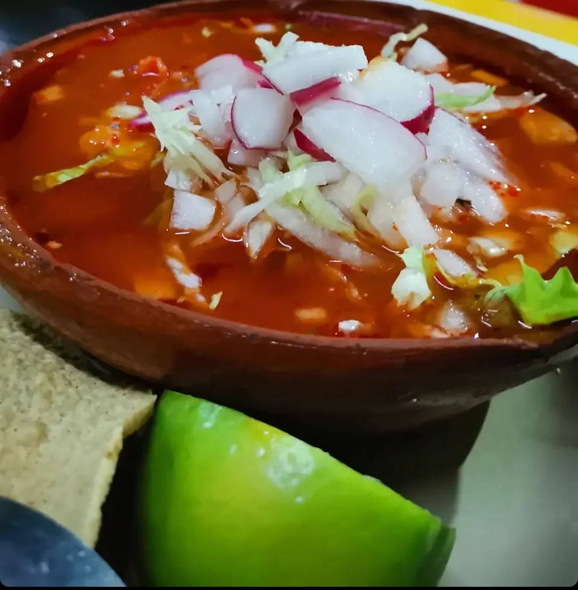
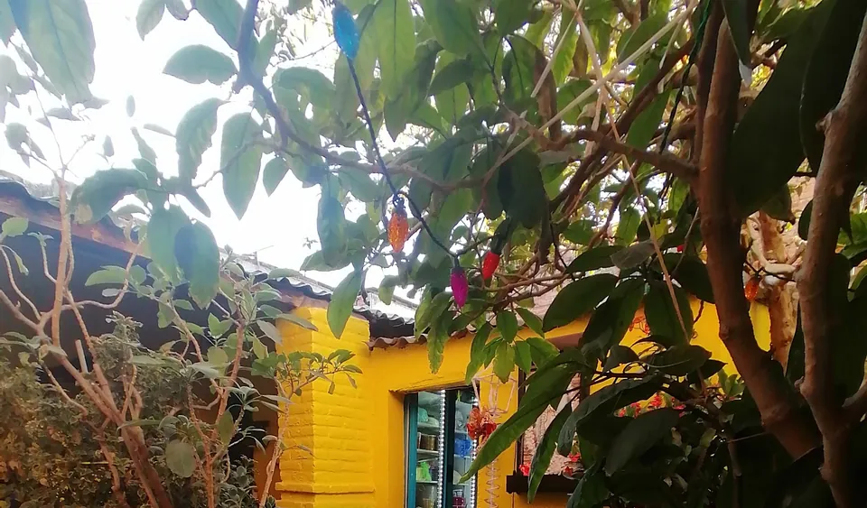
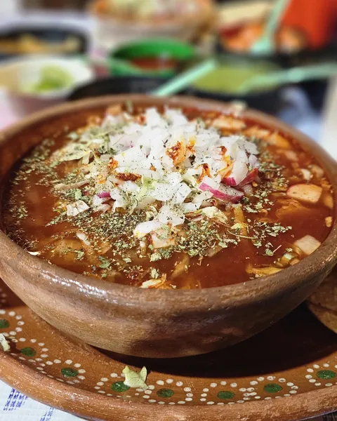
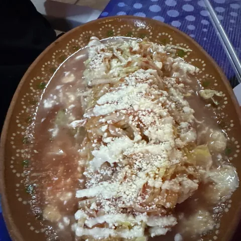
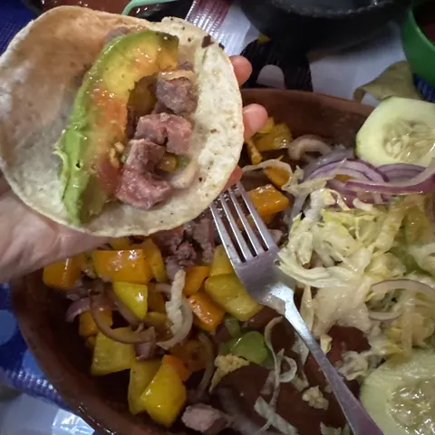
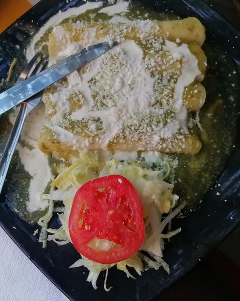
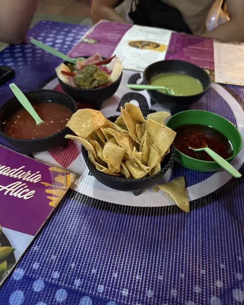
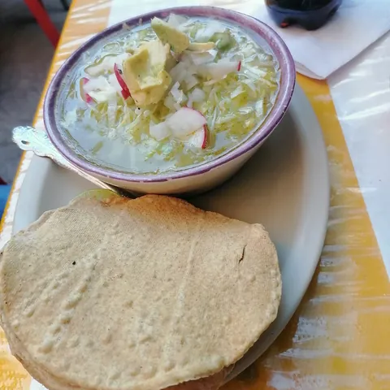
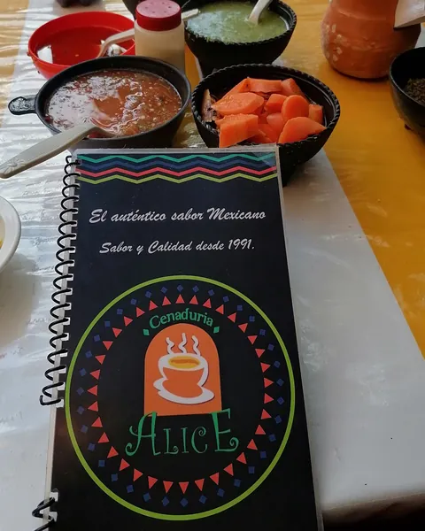

Barrio de San Marcos
Cena de patiodesde 1991
Pozole, enchiladas, sopes y carne asada, entrando por la puerta chica.
Cenamos de martes a domingo
Lo que se cenaen Alice
Los platos que más se nombran en las opiniones. El precio te lo dicen por teléfono.
Te reciben con verdura curtida y salsa verde para todo.
Llamar y preguntar el precioMarca tu cenacon frijolitos
Un toque pone un frijol, tres platos máximo por carta. Cuando termines, llámanos.

"Walking through a small door in a cement wall [...] Rustic. Plants everywhere."
Sharon Kyle, Google (en inglés)
Cómo llegarLa comida estaba muy sabrosa y a muy buen precio, el servicio es excelente y la atención es rápida. El lugar me parece muy pintoresco y cómodo, volvería sin duda.
Mar · Google · hace un año
Delicioso. Es el segundo día al hilo viniendo a cenar. La atención en general es buena, la salsa verde esta buenisima en todo lo que la puedas pedir.
Shandell Barbosa · Google · hace 4 años
Excelente, sabor, atención y precios crean la experiencia perfecta para disfrutar el sazón tan delicioso de este lugar mágico, cada visita es un grato recuerdo.
Mario Nova Vargas · Google · hace un año
I am absolutely amazed at how good the food was. A great variety of authentic Mexican antojitos [...] The owner came and greeted us. Very friendly. Highly recommend.
Guillermo Nieto - Reyes · Google · hace 3 años · en inglés
A hidden jem in local cuisine. [...] Go to the back for a more private atmosphere. The food has a good flavors and the portions are fine.
Teo Padilla · Google · hace 6 años · en inglés
I love the treasures one finds when walking through a small door in a cement wall in Aguascalientes. Friendly people ready to serve their delicious homemade culinary delights. Rustic. Plants everywhere.
Sharon Kyle · Google · hace 5 años · en inglés
Absolutely outstanding. Delicious. Reasonable. And beautiful outdoor garden patio surroundings.
Phillip Vásquez Lebrón · Google · hace 5 años · en inglés
I love the sopes and the flautas. The service is fast and great, don't forget ask for your free dessert.
Gustavo Islas Guerra · Google · hace 3 años · en inglés
Cazuelas de barro,mesas de colores







Ven a cenara San Marcos
Cenamos de martes a domingo
José Guadalupe Posada 301Barrio de San Marcos, 20070
Aguascalientes, Ags.
- LunesCerrado
- Martes18:30 a 23:15
- Miércoles18:30 a 23:15
- Jueves18:30 a 23:15
- Viernes19:00 a 23:30
- Sábado19:00 a 23:30
- Domingo18:30 a 23:15
En horas pico se llena. Si vienes de lejos, llama antes.
Todo listopara completar
Esta es una muestra. Con tus datos, queda lista.
- Carta completa con precios
- Número de WhatsApp, si lo usan
- Fotos de la fachada y de la cocina
- Facebook o Instagram del negocio
Pásanoslo por el mismo chat donde te llegó esta muestra.
Volver a la carta